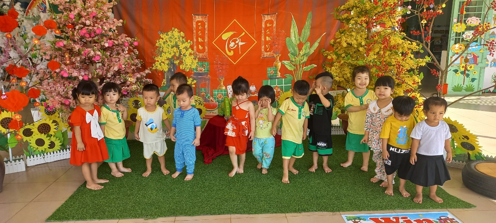

Âm thanh của hạnh phúc
Cà Rốt 🥕 bập bẹ nói từ khá sớm, ban đầu chỉ là những từ đơn giản như “ba,” “mẹ”, “bà”, “ông nội,” hoặc bắt chước những gì người lớn nói. Mình nhớ có một lần dạy Cà Rốt về trái quýt…
Mình hỏi:
- Đây là trái gì? (ngừng một xí cho “Rốt” nhìn trái quýt đang cầm trên tay)
- Đây là trái “quích” (mình tự trả lời câu hỏi bằng chất giọng miền Nam)
- Đây là trái gì? (mình hỏi lại)
🥕 trả lời: Trái “wứt”. 🤣
Mình cố lặp lại lần mà Rốt vẫn cứ trái “wứt” nên phải nhờ đến mẹ Rốt. Đến khi mẹ nó phát âm chuẩn trái quýt thì Rốt mới nói đúng được. Cười “chớt” 😂, thì ra do mình phát âm sai nên con trẻ nghe sao thì nói y như vậy. Mình thấy cái chuyện kỳ cục là khi ta nói từ trái “quýt” thì phải chu mỏ, uốn lưỡi thì mới ra, còn trái “quích” nhanh gọn, dễ thế mà lại nói theo không được. Nói gì nói, trái “quýt” mới đúng nhen các bạn, người miền nam quen nói nhanh thành trái “quích” chứ không phải bị ngọng đâu á 🙄.
(Ảnh: Freepik)" width="200px">
Cà rốt bây giờ lém lắm, có thể nói một câu dài 4-5 từ và phù hợp ngữ cảnh, đặt câu hỏi và trả lời rõ ràng. Nó thường nói như ra lệnh: “bà cởi áo” (áo khoác) mỗi khi bà đi đâu về, để bà không đi nữa. Đi học cũng tự lựa quần áo chứ không chịu người khác soạn cho nữa. Mà cái goute thời trang của nó cũng lạ, chụp chung các bạn ở trường mầm non mà nhìn nó lạc tông dễ sợ.

Cà rốt không biết giống ai mà cái nết nó vui tính. Mẹ nó chưng tổ yến với táo đỏ dụ con ăn. Nó không chịu ăn nên giở trò nôn oẹ oẹ. Không biết học ở đâu nhưng mà nhìn điệu bộ giả trân không chịu nỗi, làm ba mẹ phải cười phì phèo trong sự bất lực. 😶😅

Lời kết
Đối với mình, mỗi đứa trẻ sinh ra như một món quà vô giá của cha mẹ và mỗi chúng ta, ai cũng vậy, đều có cha mẹ sinh ra chứ không thể từ đất nẻ mà chui lên được. Đôi khi, những đứa trẻ may mắn sinh ra được “ngậm thìa vàng” hay phải đi lùi mới về vạch đích. Ngược lại, có những bậc cha mẹ phải lao động vất vả để nuôi con.
Sinh con ra nên mình cố gắng làm việc kiếm tiền để lo cho con những gì tốt nhất có thể. Mình không kỳ vọng con mình là một thiên tài hay thần đồng gì cả, mà chỉ mong con được khoẻ mạnh, bình an và vui vẻ. 💌 🥰
Bạn có biết không?
Âm thanh hạnh phúc nhất không phải là tiếng “ting ting 📲” mỗi khi cuối tháng lương về mà là tiếng con gọi “ba ơi.”
Nghe sao triều mến và ấm áp đến lạ thường.
Đây có còn thực sự là âm thanh
hạnh phúc nhất thể giới? (Ảnh: Kênh14)
Hay đây mới là âm thanh hạnh phúc nhất?
Âm thanh của hạnh phúc
https://thiennguyen.dev/2024/01/28/nhat-ky/2024-01-28-am-thanh-hanh-phuc/